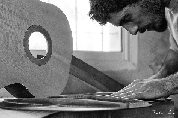
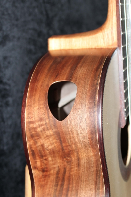
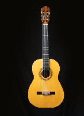
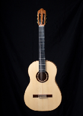
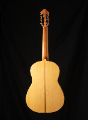

Galería de Imágenes





Guitarras clásicas y Contemporáneas
Comencé a adentrarme en el mundo de la luthería de forma lúdica, a muy temprana edad, experimentando con instrumentos de viento y de cuerda que había en mi entorno. A veces hacía alguna reparación menor, o intentaba construir una quena con un trozo de caña, por ejemplo. Más adelante hice mi primera guitarra clásica íntegramente con maderas autóctonas, lo cual llevó a que un amigo me encargara un instrumento a medida, gracias a lo cual fui ahondando en el mundo de la luthería, y un pedido llevó muchos más. Algunos años después tuve la posibilidad de hacer varios cursos y seminarios en el taller del colega Esteban Gonzalez, gran maestro y tutor, quien me instruyó en los principios acústicos de los cordófonos. En el año 2013 comencé a dar clases de construcción de instrumentos en el Instituto Polivalente de Arte (San Rafael, Mendoza), actividad que continuó hasta el 2016. Desde el año 2019 doy clases a grupos reducidos en mi taller a estudiantes de todas las edades y niveles.
El mundo de la guitarra clásica es por lo general bastante conservador. Las primeras guitarras que construí a pedido fueron creadas usando especies tropicales para fondo y aros, que se vienen utilizando en guitarrería desde el siglo XIX. Lo cierto es que las especies más tradicionales, como el palisandro de Río (también llamado jacarandá de Bahía) o la caoba se empleaban en España en el siglo XIX porque eran maderas que se utilizaban en ebanistería y carpintería fina en esa época, y no exclusivamente por sus cualidades sonoras. Numerosos estudios contemporáneos sobre el uso de especies alternativas en la construcción de instrumentos ponen en evidencia que la calidad sonora que puede lograrse empleando especies no tropicales no es inferior a la que se logra con especies usadas tradicionalmente. Es por esto que en los últimos años he empezado a utilizar (para fondo y aros, y también para diapasones y otros componentes) cortes de árboles recuperados de mi ciudad, así como madera autóctona de nuestro país y región. Entre otras especies, he empleado guayubira, ciprés, acacia robinia, acacia visco, olivo, paraíso y petiribí. El resultado sonoro ha sido muy positivo, aunque aún queda mucho por experimentar en este campo.